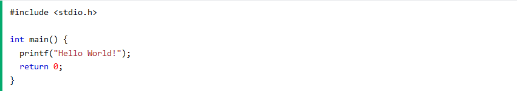

Lesson 1
History of C language
The history of C programming language is quite interesting. C was
originally designed for and implemented on the UNIX operating system on
the DEC PDP-ll, by Dennis Ritchie. C is the result of a development
process that started with an older language called BCPL. BCPL was
developed by Martin Richards, and it influenced a language called B,
which was invented by Ken Thompson. B led to the development of C in
the 1970s.
For many years, the de facto standard for C was the version supplied with
the UNIX operating system. In the summer of 1983, a committee was
established to create an ANSI (American National Standards Institute)
standard that would define the C language. The standardization process
took six years (much longer than anyone reasonably expected).
The ANSI C standard was finally adopted in December 1989, with the first copies becoming available in early 1990. The
standard was also adopted by ISO (International Standards Organization), and the resulting standard was typically referred 3
to as ANSI/ISO Standard C. In 1995, Amendment 1 to the C standard was adopted, which, among other things, added
several new library functions. The 1989 standard for C, along with Amendment 1, became a base document for Standard
C++, defining the C subset of C++.
The version of C defined by the 1989 standard is commonly referred to as C89.
During the 1990s, a new standard for C was being developed. It was the 1999 standard for C, usually referred to as C99. In
general, C99 retained nearly all of the features of C89. The C99 standardization committee focused on two main areas: the
addition of several numeric libraries and the development of some special-use, but highly innovative, new features, such as
variable-length arrays and the restrict pointer qualifier. These innovations have once again put C at the forefront of computer
language development. C89 is the version of C in widest use, it is currently accepted by all C compilers, and it forms the
basis for C++.
About C programming language
Procedural Language - Instructions in a C program is executed step by step.
Portable - You can move C program from one platform to another, and run it without any or minimal changes.
Speed - C programming is faster than most programming languages like Java, Python, etc.
Translator Program - C uses compiler as its translator program.
General Purpose - C programming can be used to develop operating systems, embedded systems, databases. and so on.
Application of C programming
Some examples of the use of C are:
Operating systems
Language compilers
Assemblers
Text editors
Print spoolers
Network drivers
Modern programs
Databases
Language interpreters
Utilities
Get Started with C
To start using C, you need two things:
1. A text editor, like Notepad, to write C code
2. A compiler, like GCC, to translate the C code into a language that the computer will understand
There are many text editors and compilers to choose from. In this tutorial, we will use an IDE (see below).
Install IDE
An IDE (Integrated Development Environment) is used to edit AND compile the code.
Popular IDE's include Code::Blocks, Eclipse, and Visual Studio. These are all free, and they can be used to both edit and debug C code.
Note: Web-based IDE's can work as well, but functionality is limited.
We will use Code::Blocks in our tutorial, which we believe is a good place to start.
You can find the latest version of Codeblocks at http://www.codeblocks.org/. Download the mingw-setup.exe file, which will install the text editor with a compiler.
C Quickstart
Let's create our first C file.
Open Codeblocks and go to File > New > Empty File.
Write the following C code and save the file as myfirstprogram.c (File > Save File as):
myfirstprogram.c 
Don't worry if you don't understand the code above - we will discuss it in detail in later. For now, focus on how to run the code.
In Codeblocks, it should look like this:

Then, go to Build > Build and Run to run (execute) the program. The result will look something to this:
Congratulations! You have now written and executed your first C program.